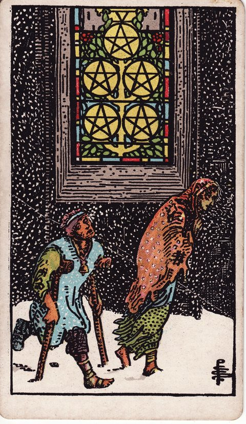

PENTACLES · 地
ペンタクルの5の意味
Five of Pentacles

- 分類ペンタクル
- 象徴地／ペンタクル（仕事・お金・現実）／数字5（困窮・孤立）
- 正位置心細い・余裕がない・助けが必要
- 逆位置助けを受ける・少し楽になる・立て直す
足りないものへの不安と、頼れる助けを考えるカードです。
SYMBOLS
描かれている象徴
雪の中を2人が歩き、近くの建物の窓には光があります。寒さや心細さの中でも、助けが近くにあるかもしれない絵です。困りごとがあるのは、本人のせいとは限りません。
UPRIGHT
正位置の意味
- 心細い
- 余裕がない
- 助けが必要
お金や体力、気持ちに余裕がないなら、一人で抱えなくて大丈夫です。何に困っているかを書き、相談できる人や場所を探してみましょう。
進めやすさ1 / 5（いったん立ち止まる）
- 気づいていないこと
- 相談できる人や場所を、探せていますか。
- 気をつけたいこと
- 困ったことを、一人で我慢し続けないようにしましょう。
- 本当はどうしたい？
- 今、いちばん助けてほしいことは何ですか。
- やめてもよい考え
- 助けを受けることを、恥ずかしいと思わなくても大丈夫です。
- 選ぶときのヒント
- 必要な支えを受けやすい方はどちらですか。
REVERSED
逆位置の意味
- 助けを受ける
- 少し楽になる
- 立て直す
使える助けや、相談できる人を確かめてみましょう。少し余裕が戻っても、無理を急に増やさず、必要な支えは続けて大丈夫です。
進めやすさ3 / 5（条件しだい）
- 気づいていないこと
- 少し楽になったことや、使える助けはありますか。
- 気をつけたいこと
- 余裕が戻っても、急に負担を増やさないようにしましょう。
- 本当はどうしたい？
- これからも、どんな支えを続けたいですか。
- やめてもよい考え
- 前に頼れなかったからと、今もあきらめなくても大丈夫です。
- 選ぶときのヒント
- 相談を続けながら立て直せる方はどちらですか。
FOR YOUR DECISION
決断・迷いにおけるヒント
決断の場面での読み方
ペンタクルの5は、雪の中を歩く二人が、明かりの灯る教会の窓に気づかずに通り過ぎる場面です。困窮や孤立の中で、すぐそばにある助けが見えなくなっている状態を表します。
決断の場面では、一人で解決しようとせず、使える支援や制度、頼れる人を書き出してみてください。助けを求めることは弱さではなく、状況を変えるための現実的な判断です。
窓の明かりに目を向けることが、最初の一歩になります。
よくある迷いとの向き合い方
お金や健康、仕事の不安で先が見えず、どう動けばよいか迷うときに寄り添うカードです。逆位置なら、状況が好転し始め、援助を受け取れる段階です。大きな決断を急ぐより、まず生活の土台を立て直すことを優先しましょう。
決断前に自分に問いかけたいこと
使える支援や制度、頼れる人を書き出したか。一人で解決しようと抱え込んでいないか。すぐそばにある明かりを見落としていないか。大きな決断より先に、生活の土台を立て直せるか。
「進めやすさ」は、その選択肢を「いま進める」ときの追い風の強さ。運勢の良し悪しではない。
RELATED CARDS
関連するカード

正位置の進めやすさが同じ（1 / 5）カード

このカードの視点で考えたい悩み
いまの迷いに近いテーマから、考え方と自分への問いかけを探せます。